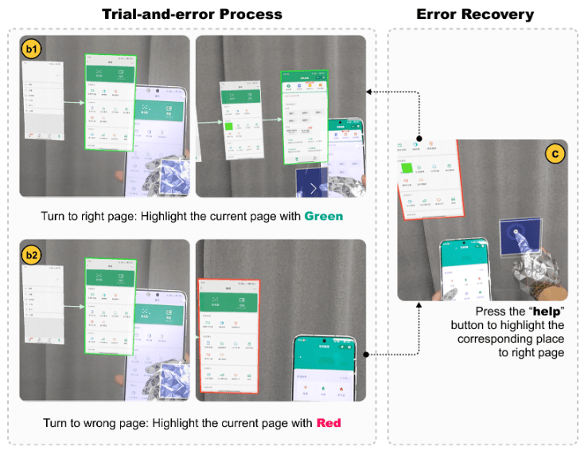

Linjie Qiu
邱林杰 | Master Student
lqiu250@connect.hkust-gz.edu.cn
Linjie Qiu
邱林杰 | Master Student
lqiu250@connect.hkust-gz.edu.cn
|
Hi, I am Linjie Qiu, a second-year MPhil student at
HKUST(GZ) in China. I am lucky to be advised by Prof. Mingming Fan in APEX lab. Previously, I obtained my Bachelor's degree from Xiamen University.
My previous research experience is around the field of
Human Computer Interaction (HCI) with three foci: 1) VR/AR/MR: designing and evaluating novel interactive interfaces; 2) Human-AI Collaboration: uncovering foundational challenges humans face while working with AI.
Research Goal: VR/AR/MR systems that improve everyday life.
Research Interest: The intersection of VR/AR/MR, human-AI collaboration, and human behavior modeling.
Research Question: How can we build intelligent user interface that unify perception and daily life data to infer user intent instantly and understand user preference over time, enabling intuitive interaction with minimal physical and cognitive effort?
I am currently seeking for a PhD position in Computer Science around the world (2026 Fall).
If you are interested, please feel free to contact me at any time.
LinkedIn /
Github
/
Google Scholar
/
CV(updated in Jan. 2026)
|
Interests
Human-Computer Interaction
Human-AI Collaboration
VR/AR/MR
Assistive Technology
|
Education
üéì M.Phil. in Computational Media and Art
HKUST(GZ), China
|
2024 - Present |
üéì B.Eng. in Digital Media Technology
Xiamen University, China
|
2020 - 2024 |
|
|
- 01/2026: Two papers are accepted by IEEE VR 2026, one as the first author. Both are selected as TVCG.
- 08/2025: One paper is accepted by CSCW 2025.
- 07/2025: One paper is accepted by MM 2025.
- 01/2025: One paper is accepted by both TVCG and IEEE VR 2025 as the co-first author.
- 09/2024: Started my journey at HongKong University of Science and Technology (Guangzhou).
- 11/2023: Interning at HongKong University of Science and Technology (Guangzhou) with Dr. Mingming Fan.
|
|
DesignMemo: Integrating Discussion Context into Online Collaboration with Enhanced Design Rationale Tracking
HAI
Boyu Li, Linjie Qiu, Duotun Wang, Qianxi Liu, Ryo Suzuki, Mingming Fan, Zeyu Wang
ACM SIGCHI Conference on Computer-Supported Cooperative Work & Social Computing (CSCW 2025)
[PDF]
|
|

|
ExplorAR: Assisting Older Adults to Learn Smartphone Apps through AR-powered Trial-and-Error with Interactive Guidance A11Y VR/AR/MR HAI
Jiawei Li, Linjie Qiu, Zhiqing Wu, Qiongyan Chen, Ziyan Wang, Mingming Fan
ACM International Conference on Multimedia (MM 2025)
[PDF]
|
|
|
FocalSelect: Improving Occluded Objects Acquisition with Heuristic Selection and Disambiguation in Virtual Reality VR/AR/MR
Duotun Wang*, Linjie Qiu* (Joint first authors), Boyu Li, Qianxi Liu, Xiaoying Wei, Jianhao Chen, Zeyu Wang, Mingming Fan
IEEE Transactions on Visualization and Computer Graphics (TVCG & IEEE VR 2025)
[PDF]
[Video]
|

|
[VR Game] Sprayer Simulator. 2023
Inspired by Splatoon and under the support of PICO3, we
tried to create a sprayer painting game using Unity. In
this world, certain objects suddenly lose their color.
Now, armed with the spray gun, you can bring your
imagination to life, explore new frontiers, roam through
different scenes, and restore color to the black and
white world.
[Video]
|

|
[Game] Read First. 2022
This is a 2D horizontal board action game developed by
Unity. Players take on the role of brave warriors
tasked with eliminating unknown monsters. Before facing
each boss, strategic decisions can be made on what
skills to equip based on the provided information.
Properly chosen skills can quickly defeat the boss,
while inappropriate ones will great increase the
difficulty of adventure.
[News] Our
game wins the Bronze Medal in
Game Industry Gold Kou Competition
(3/23).
[Video]
[Game Daily]
|
|
Academic Services (Selected)
|
- SIGCHI Conference on Human Factors in Computing Systems (CHI) 2026
- IEEE Conference on Virtual Reality and 3D User Interfaces (IEEE VR) 2026
|